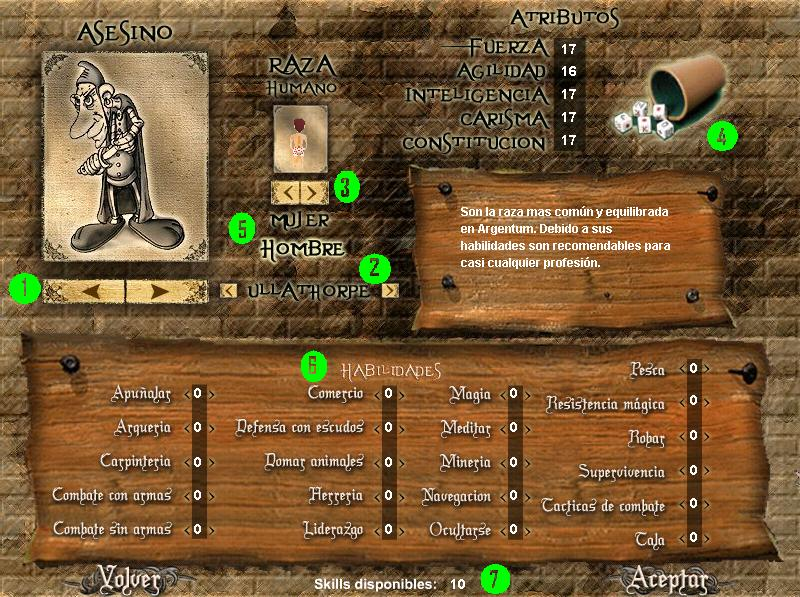

Bienvenido a TDS Legacy. Una vez instalado el juego, ingresa al mismo haciendo doble click en el acceso directo (TDSL.exe). Antes de empezar a jugar tendrás que crearte un personaje. En la pantalla principal clikea el botón "Crear Nuevo Personaje". Cuando lo hagas te aparecerá la siguiente pantalla:

1. En este casillero elegís la clase o el oficio que quieres que tenga tu personaje (ver Clases Sociales).
2. La ciudad de inicio de tu personaje, allí comenzarás a vivir tus aventuras.
3. Acá se elige la raza que querés ser (ver Razas).
4. El dado, este irá variando los atributos de tu personaje. Para que varíe, deberás realizar un click cada vez que lo desee.
5. Acá decidís si el personaje es hombre o mujer. Esto hará que varíen algunas cosas, como las ropas que podrás usar.
6. La tabla de skills, algunos se ganaran naturalmente, otros solo asignando y a algunos otros deberás asignarle un mínimo para empezar a ganarlos.
7. La cantidad de skillpoints libres a la hora de crear el personaje. Los cuales deberán ser usados en su totalidad si o si, cuando estés creando tu personaje
8. Estos son los atributos que va a poseer. Éstos se pueden elegir en la creación del personaje cliqueando en el dado de la izquierda (ver Atributos).
Luego de armar tu personaje pulsa sobre la palabra continuar. Al hacer esto se va a abrir una ventana pidiéndote que ingreses el Nombre del PJ, Tu mail, un Password y una Clave PIN, la cual es de uso personal y evita robos de personajes.
El mail es importante para recuperar la clave de tu personaje en caso de perderla u olvidarla, y también si en un futuro deseas vender tu personaje, por monedas de oro. (Por lo tanto deben poner un mail real, ya que de lo contrario si pierden la clave no hay otra forma de recuperarla).
El password es para loguearte siempre que entres al juego.
La clave PIN no es recuperable mediante ningún medio, así que no deberás olvidarla, ya que con ella podrás vender a tu personaje, o recuperarlo si te fue robado el mail del mismo, entre otras.